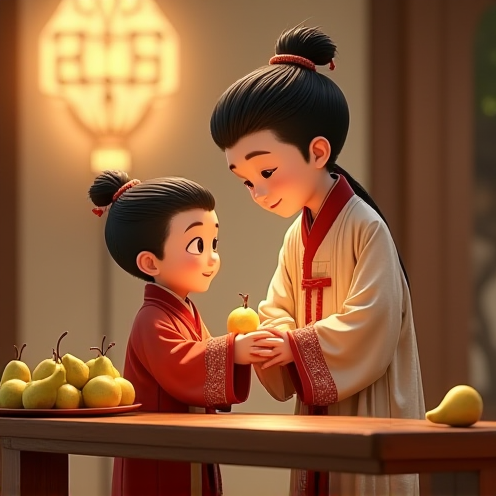

孔融让梨 Kǒng Róng ràng lí
- 孔融四岁，Kong Rong, a four-year-old boy,能让梨。
- 上让兄姊，dressed in ancient Hanfu,下让弟妹。
- 父母喜悦，stood at a wooden table full of pears.人见人夸。
- 百善孝为先，With a smile on his face and a pear in his hands,从小做起。
- he politely handed it to his elder brother standing next to him.
- 兄长，The elder brother, dressed in similar ancient costumes and with a kind face,以赞许的目光回应。
- touched Kong Rong's head, 2 boys, disney movie.
